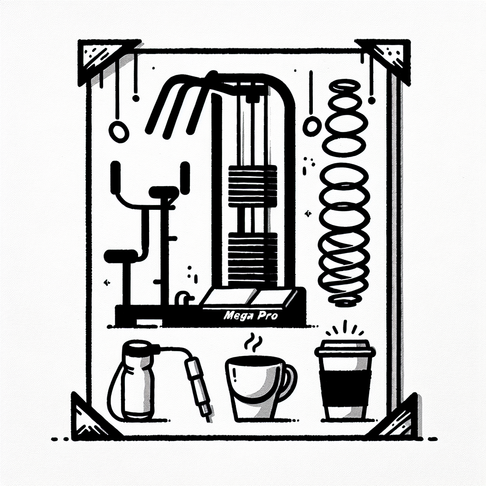

Le rôle des ressorts sur le MegaPro expliqué
Le rôle des ressorts sur le MegaPro expliqué
Vous vous êtes certainement déjà demandé ce qui rend la méthode Lagree si efficace et surtout, pourquoi nous utilisons des machines MegaPro dans notre studio DOZ. La réponse est simple : un mélange subtil de technologie de pointe et de mécanismes ingénieux qui permettent un entraînement complet, sécurisé et efficace. Aujourd'hui, nous allons nous concentrer sur un élément essentiel de la MegaPro : les ressorts.
Pourquoi les ressorts sont-ils si importants ?
Les ressorts de la MegaPro ne sont pas simplement là pour faire joli ; ils jouent un rôle central dans la qualité de votre entraînement. Leur importance réside dans leur capacité à offrir une résistance adaptable, ce qui est essentiel pour :
- Ajuster l'intensité de chaque exercice
- Permettre une progression continue
- Offrir un entraînement sécurisé, même si vous êtes débutant
En ajustant les ressorts, vous modifiez la tension et donc, l'effort requis pour chaque mouvement. Cela vous permet de travailler de manière ciblée et de progresser à votre rythme.
Comment fonctionnent les ressorts ?
Les ressorts de la MegaPro sont conçus pour offrir une grande polyvalence. Voici comment ils opèrent :
- Différents niveaux de tension : Chaque ressort a un niveau de résistance spécifique, permettant ainsi de personnaliser votre entraînement en fonction de vos besoins et de vos objectifs.
- Transition fluide : En un simple geste, vous pouvez moduler la difficulté en changeant ou en ajoutant des ressorts. Cela permet de passer rapidement d'un exercice à un autre sans temps mort, optimisant ainsi votre session.
- Rentabiliser chaque répétition : L'idée est de maximiser l'effort sur le muscle cible tout en minimisant l'impact sur les articulations. Une preuve supplémentaire que le sport high-tech doit être intelligent.
L'entraînement Lagree : moins, c'est plus
Le Studio Lagree chez DOZ privilégie une approche qualifiée comme 'Instant Brut'. Cela signifie œuvrer efficacement, sans frais inutiles, ni compromis sur la qualité.
Avec la méthode Lagree, la haute intensité rejoint le faible impact. Grâce aux ressorts de la MegaPro, chaque mouvement est augmenté pour en extraire un maximum de bénéfice. Voici en quoi cela consiste concrètement :
- Des mouvements lents et contrôlés qui vous permettent de travailler profondément la masse musculaire.
- La capacité à combiner plusieurs exercices en une seule série grâce à l'ajustement des ressorts.
- L'amélioration de l'engagement mental, vous obligeant à prêter attention à votre technique et à votre posture.
Une expérience unique à Anglet
Vous êtes passionné par la forme physique, le bien-être et le café ? DOZ est l'endroit idéal pour cela. Non seulement nous offrons un entraînement exceptionnel dans notre Studio Lagree, mais la magie se poursuit dans notre Coffee Shop attenant.
Après une séance stimulante et ressourçante sur la MegaPro, détendez-vous avec un café de spécialité savamment torréfié et une sélection de menus sains et locaux. Tout comme nos entraînements, chaque tasse est conçue pour être une expérience de qualité brute.
Rejoignez notre communauté
Prêt à faire le premier pas ? Réservez dès aujourd'hui votre session au Studio Lagree et découvrez par vous-même le secret des ressorts MegaPro. Et après, savourez un café qui saura vous réconforter à notre Coffee Shop.
Chez DOZ, chaque instant est une invitation à vivre l'instant présent, sans artifice, mais avec toute l'intensité et l'authenticité que le Pays Basque sait offrir. Réservez votre cours dès maintenant et laissez-nous vous guider vers une meilleure version de vous-même.